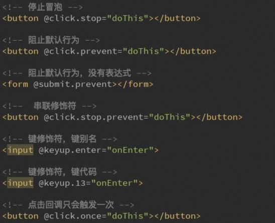

王红元
微博：coderwhy
微信：372623326


 内容概述
内容概述
插值操作
绑定属性
计算属性
事件监听
条件判断
循环遍历
阶段案例

v-model

 Mustache
Mustache
如何将data中的文本数据，插入到HTML中呢？
我们已经学习过了，可以通过Mustache语法(也就是双大括号)。

我们可以像下面这样来使用，并且数据是响应式的

 v-once
v-once
但是，在某些情况下，我们可能不希望界面随意的跟随改变
这个时候，我们就可以使用一个Vue的指令
v-once:
该指令后面不需要跟任何表达式(比如之前的v-for后面是由跟表达式的)
该指令表示元素和组件(组件后面才会学习)只渲染一次，不会随着数据的改变而改变。

代码如下：

 v-html
v-html
某些情况下，我们从服务器请求到的数据本身就是一个HTML代码
如果我们直接通过{{}}来输出，会将HTML代码也一起输出。
但是我们可能希望的是按照HTML格式进行解析，并且显示对应的内容。
如果我们希望解析出HTML展示
可以使用v-html指令
该指令后面往往会跟上一个string类型

会将string的html解析出来并且进行渲染

 v-text
v-text
v-text作用和Mustache一致：

v-text通常情况下，接受一个string类型

 v-pre
v-pre
v-pre用于跳过这个元素和它子元素的编译过程，用于显示原本的Mustache语法。
比如下面的代码：
第一个h2元素中的内容会被编译解析出来对应的内容

第二个h2元素中会直接显示{{message}}


 v-cloak
v-cloak

在某些情况下，我们浏览器可能会直接显然出未编译的Mustache标签。

 v-bind介绍
v-bind介绍
前面我们学习的指令主要作用是将值插入到我们模板的内容当中。
但是，除了内容需要动态来决定外，某些属性我们也希望动态来绑定。
比如动态绑定a元素的href属性
比如动态绑定img元素的src属性
这个时候，我们可以使用v-bind指令：

下面，我们就具体来学习v-bind的使用。

 v-bind基础
v-bind基础
v-bind用于绑定一个或多个属性值，或者向另一个组件传递props值(这个学到组件时再介绍)
在开发中，有哪些属性需要动态进行绑定呢？
还是有很多的，比如图片的链接src、网站的链接href、动态绑定一些类、样式等等

比如通过Vue实例中的data绑定元素的src和href，代码如下：

 v-bind语法糖
v-bind语法糖
v-bind有一个对应的语法糖，也就是简写方式
在开发中，我们通常会使用语法糖的形式，因为这样更加简洁。

简写方式如下：

 v-bind绑定class（一）
v-bind绑定class（一）
很多时候，我们希望动态的来切换class，比如：
当数据为某个状态时，字体显示红色。
当数据另一个状态时，字体显示黑色。
绑定class有两种方式：
对象语法

数组语法

 v-bind绑定class（二）
v-bind绑定class（二）
绑定方式：对象语法
对象语法的含义是:class后面跟的是一个对象。
对象语法有下面这些用法：
用法一：直接通过{}绑定一个类
<h2 :class="{'active': isActive}">Hello World</h2>
用法二：也可以通过判断，传入多个值
<h2 :class="{'active': isActive, 'line': isLine}">Hello World</h2>
用法三：和普通的类同时存在，并不冲突
注：如果isActive和isLine都为true，那么会有title/active/line三个类
<h2 class="title" :class="{'active': isActive, 'line': isLine}">Hello World</h2>
用法四：如果过于复杂，可以放在一个methods或者computed中
注：classes是一个计算属性

<h2 class="title" :class="classes">Hello World</h2>

 v-bind绑定class（三）
v-bind绑定class（三）
绑定方式：数组语法
数组语法的含义是:class后面跟的是一个数组。

数组语法有下面这些用法：
用法一：直接通过{}绑定一个类
<h2 :class="['active']">Hello World</h2>
用法二：也可以传入多个值
<h2 :class=“[‘active’, 'line']">Hello World</h2>
用法三：和普通的类同时存在，并不冲突
注：会有title/active/line三个类
<h2 class="title" :class=“[‘active’, 'line']">Hello World</h2>
用法四：如果过于复杂，可以放在一个methods或者computed中
注：classes是一个计算属性
<h2 class="title" :class="classes">Hello World</h2>

 v-bind绑定style（一）
v-bind绑定style（一）
我们可以利用v-bind:style来绑定一些CSS内联样式。
在写CSS属性名的时候，比如font-size
我们可以使用驼峰式 (camelCase) fontSize
或短横线分隔 (kebab-case，记得用单引号括起来) ‘font-size’
绑定class有两种方式：
对象语法

数组语法

 v-bind绑定style（二）
v-bind绑定style（二）
绑定方式一：对象语法
:style="{color: currentColor, fontSize: fontSize + 'px'}"
style后面跟的是一个对象类型
对象的key是CSS属性名称
对象的value是具体赋的值，值可以来自于data中的属性
绑定方式二：数组语法
<div v-bind:style="[baseStyles, overridingStyles]"></div>
style后面跟的是一个数组类型

多个值以，分割即可

 什么是计算属性？
什么是计算属性？
我们知道，在模板中可以直接通过插值语法显示一些data中的数据。
但是在某些情况，我们可能需要对数据进行一些转化后再显示，或者需要将多个数据结合起来进行显示
比如我们有firstName和lastName两个变量，我们需要显示完整的名称。
但是如果多个地方都需要显示完整的名称，我们就需要写多个{{firstName}} {{lastName}}
我们可以将上面的代码换成计算属性：

OK，我们发现计算属性是写在实例的computed选项中的。

 计算属性的复杂操作
计算属性的复杂操作

计算属性中也可以进行一些更加复杂的操作，比如下面的例子：

 计算属性的setter和getter
计算属性的setter和getter
每个计算属性都包含一个getter和一个setter
在上面的例子中，我们只是使用getter来读取。
在某些情况下，你也可以提供一个setter方法（不常用）。

在需要写setter的时候，代码如下：

 计算属性的缓存
计算属性的缓存
我们可能会考虑这样的一个问题：
methods和computed看起来都可以实现我们的功能，
那么为什么还要多一个计算属性这个东西呢？
原因：计算属性会进行缓存，如果多次使用时，计算属性只会调用一次。

我们来看下面的代码：


 let/var
let/var
事实上var的设计可以看成JavaScript语言设计上的错误. 但是这种错误多半不能修复和移除, 以为需要向后兼容.
大概十年前, Brendan Eich就决定修复这个问题, 于是他添加了一个新的关键字: let.
我们可以将let看成更完美的var
JS中使用var来声明一个变量时, 变量的作用域主要是和函数的定义有关.

针对于其他块定义来说是没有作用域的，比如if/for等，这在我们开发中往往会引起一些问题。

 const的使用
const的使用
const关键字
在很多语言中已经存在, 比如C/C++中, 主要的作用是将某个变量修饰为常量.
在JavaScript中也是如此, 使用const修饰的标识符为常量, 不可以再次赋值.
什么时候使用const呢?
当我们修饰的标识符不会被再次赋值时, 就可以使用const来保证数据的安全性.
const注意一:

const注意二:

 对象增强写法
对象增强写法
ES6中，对对象字面量进行了很多增强。

属性初始化简写和方法的简写：

 事件监听
事件监听
在前端开发中，我们需要经常和用于交互。
这个时候，我们就必须监听用户发生的时间，比如点击、拖拽、键盘事件等等
在Vue中如何监听事件呢？使用v-on指令
下面，我们就具体来学习v-on的使用。

 v-on基础
v-on基础
这里，我们用一个监听按钮的点击事件，来简单看看v-on的使用
下面的代码中，我们使用了v-on:click="counter++”
另外，我们可以将事件指向一个在methods中定义的函数
注：v-on也有对应的语法糖：

v-on:click可以写成@click

 v-on参数
v-on参数
当通过methods中定义方法，以供@click调用时，需要注意参数问题：
情况一：如果该方法不需要额外参数，那么方法后的()可以不添加。
但是注意：如果方法本身中有一个参数，那么会默认将原生事件event参数传递进去

情况二：如果需要同时传入某个参数，同时需要event时，可以通过$event传入事件。

 v-on修饰符
v-on修饰符

在某些情况下，我们拿到event的目的可能是进行
一些事件处理。
Vue提供了修饰符来帮助我们方便的处理一些事件：
.stop - 调用 event.stopPropagation()。
.prevent - 调用 event.preventDefault()。
.{keyCode | keyAlias} - 只当事件是从特定键
触发时才触发回调。
.native - 监听组件根元素的原生事件。

.once - 只触发一次回调。

 v-if、v-else-if、v-else
v-if、v-else-if、v-else
v-if、v-else-if、v-else
这三个指令与JavaScript的条件语句if、else、else if类似。
Vue的条件指令可以根据表达式的值在DOM中渲染或销毁元素或组件
简单的案例演示：

v-if的原理：
v-if后面的条件为false时，对应的元素以及其子元素不会渲染。

也就是根本没有不会有对应的标签出现在DOM中。

 条件渲染案例
条件渲染案例
我们来做一个简单的小案例：
用户再登录时，可以切换使用用户账号登录还是邮箱地址登录。

类似如下情景：


 案例小问题
案例小问题
小问题：
如果我们在有输入内容的情况下，切换了类型，我们会发现文字依然显示之前
的输入的内容。
但是按道理讲，我们应该切换到另外一个input元素中了。
在另一个input元素中，我们并没有输入内容。
为什么会出现这个问题呢？
问题解答：
这是因为Vue在进行DOM渲染时，出于性能考虑，会尽可能的复用已经存在
的元素，而不是重新创建新的元素。
在上面的案例中，Vue内部会发现原来的input元素不再使用，直接作为else中
的input来使用了。
解决方案：
如果我们不希望Vue出现类似重复利用的问题，可以给对应的input添加key

并且我们需要保证key的不同

 v-show
v-show

v-show的用法和v-if非常相似，也用于决定一个元素是否渲染：
v-if和v-show都可以决定一个元素是否渲染，那么开发中我们
如何选择呢？
v-if当条件为false时，压根不会有对应的元素在DOM中。
v-show当条件为false时，仅仅是将元素的display属性设
置为none而已。
开发中如何选择呢？
当需要在显示与隐藏之间切片很频繁时，使用v-show

当只有一次切换时，通过使用v-if

 v-for遍历数组
v-for遍历数组
当我们有一组数据需要进行渲染时，我们就可以使用v-for来完成。
v-for的语法类似于JavaScript中的for循环。
格式如下：item in items的形式。
我们来看一个简单的案例：
如果在遍历的过程中不需要使用索引值
v-for="movie in movies"
依次从movies中取出movie，并且在元素的内容中，我们可以
使用Mustache语法，来使用movie
如果在遍历的过程中，我们需要拿到元素在数组中的索引值呢？
语法格式：v-for=(item, index) in items

其中的index就代表了取出的item在原数组的索引值。

 v-for遍历对象
v-for遍历对象
v-for可以用户遍历对象：

比如某个对象中存储着你的个人信息，我们希望以列表的形式显示出来。

 组件的key属性
组件的key属性
官方推荐我们在使用v-for时，给对应的元素或组件添加上一个:key属性。
为什么需要这个key属性呢（了解）？
这个其实和Vue的虚拟DOM的Diff算法有关系。
这里我们借用React’s diff algorithm中的一张图来简单说明一下：
当某一层有很多相同的节点时，也就是列表节点时，我们希望插入一个新
的节点
我们希望可以在B和C之间加一个F，Diff算法默认执行起来是这样的。
即把C更新成F，D更新成C，E更新成D，最后再插入E，是不是很没有
效率？
所以我们需要使用key来给每个节点做一个唯一标识
Diff算法就可以正确的识别此节点
找到正确的位置区插入新的节点。

所以一句话，key的作用主要是为了高效的更新虚拟DOM。

 检测数组更新
检测数组更新
因为Vue是响应式的，所以当数据发生变化时，Vue会自动检测数据变化，视图会发生对应的更新。
Vue中包含了一组观察数组编译的方法，使用它们改变数组也会触发视图的更新。
push()
pop()
shift()
unshift()
splice()
sort()

reverse()


 图书购物车
图书购物车


 代码实现：HTML、CSS
代码实现：HTML、CSS


 代码实现：JS代码
代码实现：JS代码

 表单绑定v-model
表单绑定v-model
表单控件在实际开发中是非常常见的。特别是对于用户信息的提交，
需要大量的表单。
Vue中使用v-model指令来实现表单元素和数据的双向绑定。
案例的解析：
当我们在输入框输入内容时
因为input中的v-model绑定了message，所以会实时将输入的
内容传递给message，message发生改变。
当message发生改变时，因为上面我们使用Mustache语法，将
message的值插入到DOM中，所以DOM会发生响应的改变。
所以，通过v-model实现了双向的绑定。

当然，我们也可以将v-model用于textarea元素

 v-model原理
v-model原理
v-model其实是一个语法糖，它的背后本质上是包含两个操作：
1.v-bind绑定一个value属性
2.v-on指令给当前元素绑定input事件

也就是说下面的代码：等同于下面的代码：
<input type="text" v-model="message">
等同于
<input type="text" v-bind:value="message" v-on:input="message = $event.target.value">

 v-model：radio
v-model：radio

当存在多个单选框时

 v-model：checkbox
v-model：checkbox
复选框分为两种情况：单个勾选框和多个勾选框
单个勾选框：
v-model即为布尔值。
此时input的value并不影响v-model的值。
多个复选框：
当是多个复选框时，因为可以选中多个，所以对应的data中属性是一个数组。

当选中某一个时，就会将input的value添加到数组中。

 v-model：select
v-model：select
和checkbox一样，select也分单选和多选两种情况。
单选：只能选中一个值。
v-model绑定的是一个值。
当我们选中option中的一个时，会将它对应的value赋值到mySelect中
多选：可以选中多个值。
v-model绑定的是一个数组。

当选中多个值时，就会将选中的option对应的value添加到数组mySelects中

 值绑定
值绑定
初看Vue官方值绑定的时候，我很疑惑：what the hell is that？
但是仔细阅读之后，发现很简单，就是动态的给value赋值而已：
我们前面的value中的值，可以回头去看一下，都是在定义input的时候直接给定的。
但是真实开发中，这些input的值可能是从网络获取或定义在data中的。
所以我们可以通过v-bind:value动态的给value绑定值。
这不就是v-bind吗？
这不就是v-bind在input中的应用吗？搞的我看了很久，搞不清他想讲什么。

这里不再给出对应的代码，因为会用v-bind，就会值绑定的应用了。

 修饰符
修饰符
lazy修饰符：
默认情况下，v-model默认是在input事件中同步输入框的数据的。
也就是说，一旦有数据发生改变对应的data中的数据就会自动发生
改变。
lazy修饰符可以让数据在失去焦点或者回车时才会更新：
number修饰符：
默认情况下，在输入框中无论我们输入的是字母还是数字，都会被
当做字符串类型进行处理。
但是如果我们希望处理的是数字类型，那么最好直接将内容当做数
字处理。
number修饰符可以让在输入框中输入的内容自动转成数字类型：
trim修饰符：
如果输入的内容首尾有很多空格，通常我们希望将其去除

trim修饰符可以过滤内容左右两边的空格